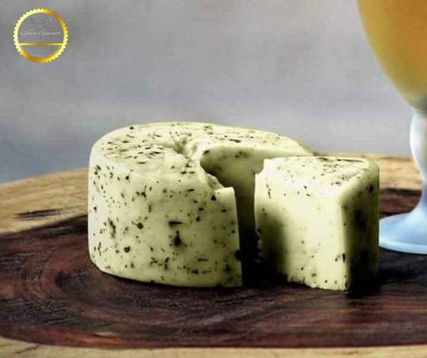
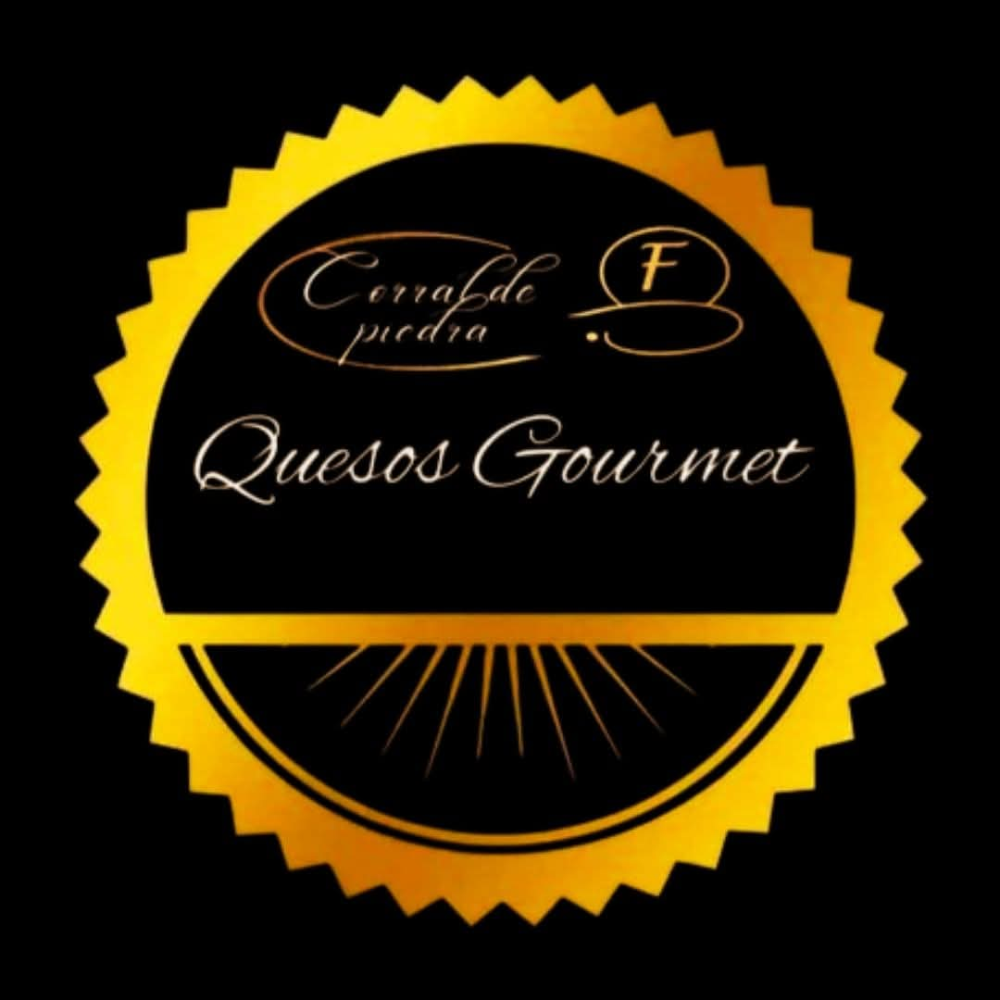
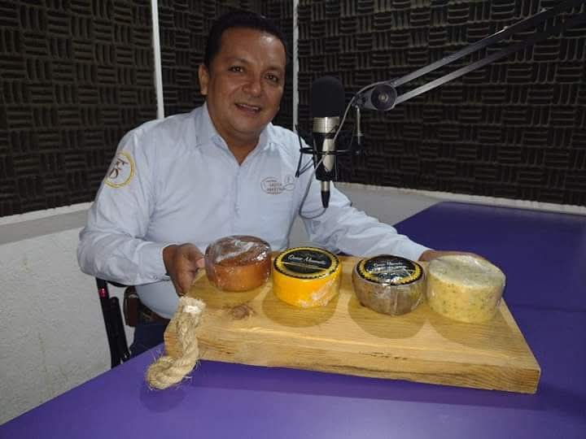
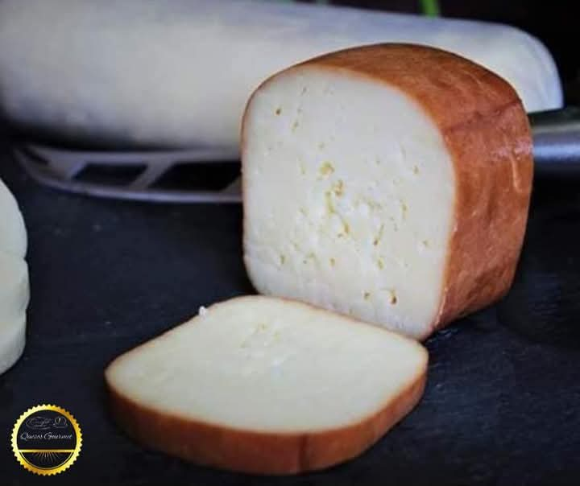
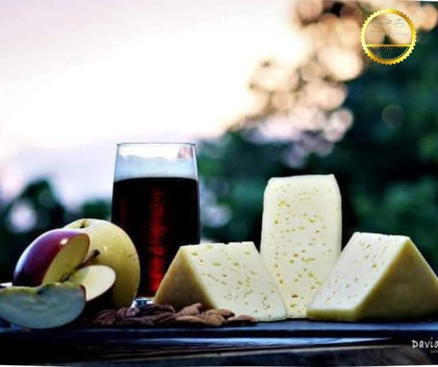
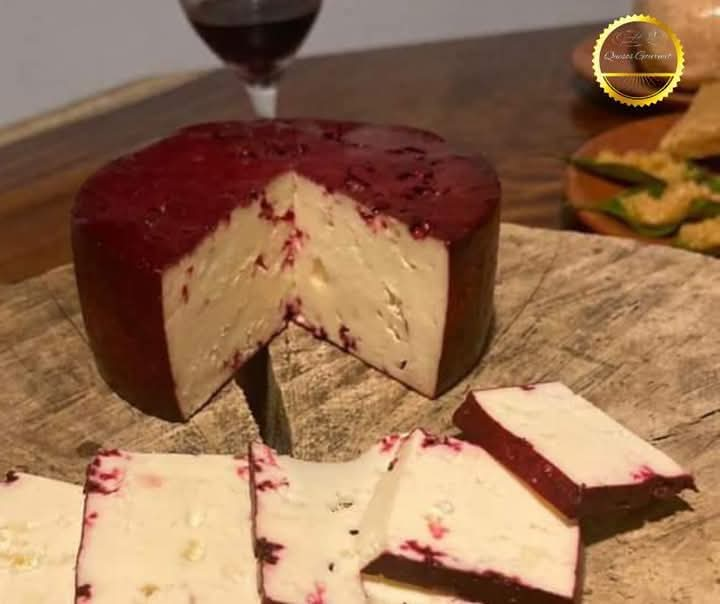
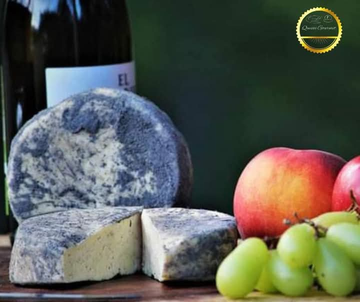

01QUESO GOURMET
Queso de Hierbas Finas
Queso de pasta chedarizada con albahaca, romero, estragón y orégano.

100% ARTESANAL
Quesos gourmet no tradicionales, elaborados artesanalmente para quienes disfrutan descubrir nuevos sabores.
ARTESANÍA
&CALIDAD
“Regálale un kilo de queso, eso hace feliz a cualquiera.”
✦
NUESTRA HISTORIA
Corral de Piedra es una microempresa familiar dedicada a la elaboración y comercialización de quesos gourmet artesanales no tradicionales.
La empresa inició formalmente en el año 2020, durante el periodo de pandemia, como una iniciativa emprendedora enfocada en ofrecer productos artesanales de alta calidad.
Su fundador, Francisco Iván Orantes San Román, impulsó la visión de crear quesos diferentes a los productos convencionales que predominan en el mercado local.
Tras su fallecimiento, la empresa continúa operando gracias al compromiso y liderazgo de Anayanci Gómez López, quien mantiene vivo el legado y la esencia del proyecto original.
Corral de Piedra
Elaboración cuidadosa y artesanal en cada pieza.
Combinaciones pensadas para salir de lo tradicional.
Seleccionamos cuidadosamente nuestros ingredientes.
Cada queso lleva dedicación, creatividad y pasión.
NUESTRA SELECCIÓN
Una selección de productos artesanales creados para sorprender tu paladar. Libre de pastoreo; quesos de alta prensa. Quesos seminaduros, 100% artesanales.

01QUESO GOURMET
Queso de pasta chedarizada con albahaca, romero, estragón y orégano.

02QUESO ARTESANAL
Queso semimaduro ahumado 36 horas con madera de cedro.

03SELECCIÓN ESPECIAL
Sabor suave, queso de pasta dura con cobertura de cera.

04QUESO GOURMET
Sabor intenso y pasta suave, con un tiempo de cura aproximado de 25 días.

05SELECCIÓN ESPECIAL
Sabor intenso y pasta suave, curado con las cenizas del Provolonne Ahumado. Tiempo de cura aproximado de 25 días. Contiene nuez moscada natural.
MÁS QUE UN QUESO
Combina nuestros quesos con pan artesanal, frutas, frutos secos o tus bebidas favoritas. Crea tu propia experiencia gourmet.
Quiero conocer másNUESTRO MUNDO
Descubre diferentes momentos, productos e ideas para disfrutar nuestros quesos.


CONTÁCTANOS
Estamos listos para compartir contigo nuestra pasión por los quesos artesanales.
961 849 5550
Envíanos un correo
Visita nuestra página
San Cristóbal de las Casas, Chiapas
CORRAL DE PIEDRA